第一次看到 Janome 5031S 的時候，就覺得這部縫紉機很眼熟，原來它 的前身是機械式的 Janome 2132S，是我在泰山社大上課所使用的縫紉機，雖已購置很多年，且做為教室用機被很多不同使用習慣的同學“操”著，但穩定性還是保持的很好，且價位不高。遲遲不下手是因為 2132S 是純機械式的沒有控速，我擔心來工作室上課的初學者很難駕馭它。
今年八月換了新工作室，縫紉區多出了一格空間，想再多添購一部縫紉機，目前入門及進階的電腦型有了、仿工業用的機型也有，因此，想要找一部價位適中、耐操又有力的電子型縫紉機，讓教室上課的同學，可以多一種類型的車子嘗試，比較差異。
物色了一陣子，相中了 Janome 5031S，想起了對他的前身印象很好，且5031S 添加了部份電子控制，多了控速調整鈕等電子輔助功能，很符合我的教學需求，相信來工作室上課的初學者，也能很快的上手。
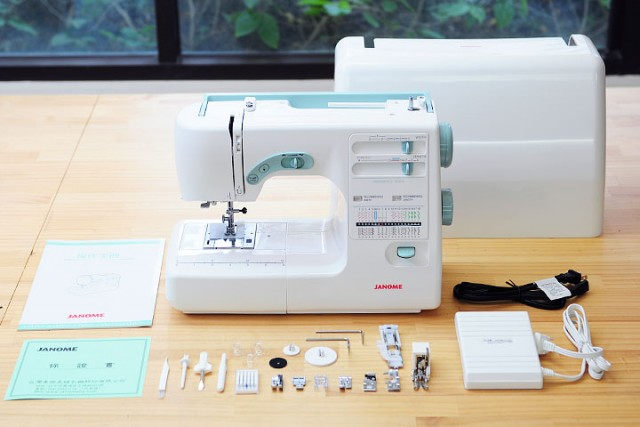
隨機附贈的配件大合照
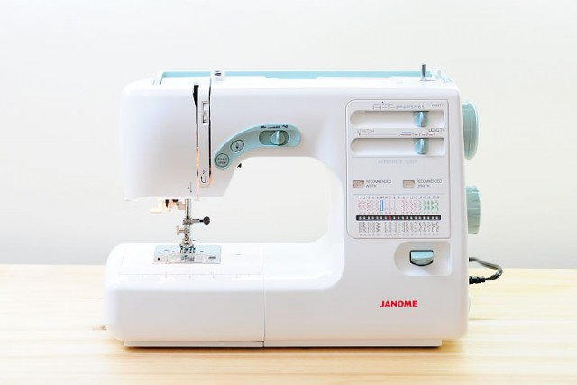
Janome 5031S本尊獨照，大面積白色霧面的處理，配上粉綠色的居部點綴，沒有滿滿的花樣說明圖，整體造型簡單清新耐看。
由於是機械式的升級版，它並沒有液晶螢幕，整機還保留很多機械式的旋鈕及撥盤，亦多了些復古的味道。
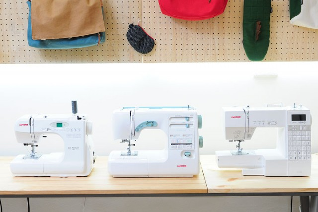
尺寸比一比，右至左為 Janome J760、Janome 5031S 及 Janome 6030，比起入門款的電腦車 J760，5031S要顯的大一號，重量及沈穩度表現的確很不錯。
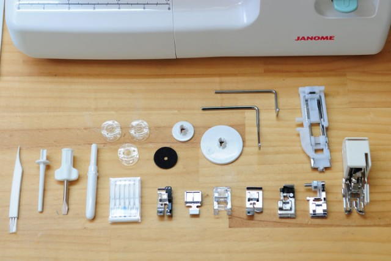
原廠附的配件和壓腳很完整，市價一千多的均勻壓布腳也大方的贈送。
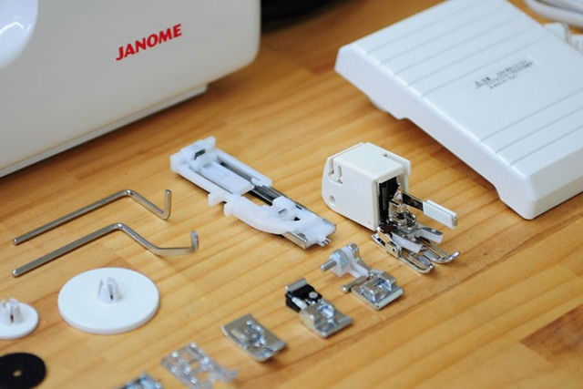 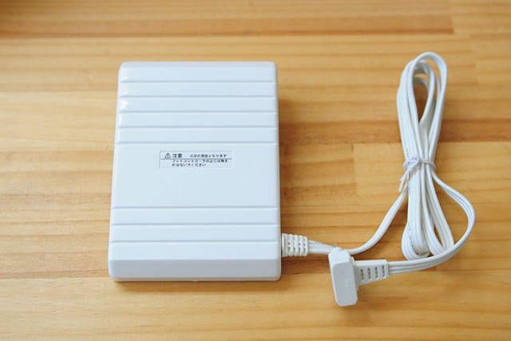
隨機的腳踏板質感很棒，很喜歡
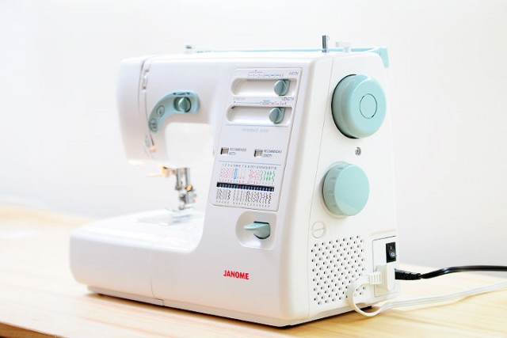
側面看過去的角度，右側有兩顆大旋鈕，上方的是壓腳上下位置的旋鈕，下方則是切換花樣的旋鈕，與電腦型的縫紉機最大的不同，它是用機械式的方式去切換的。
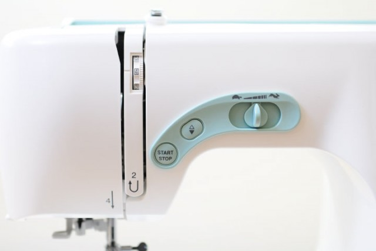
對於初學者很重要的速控功能，速度表示用了龜兔小圖案，很可愛且易懂。其餘手控啟動和上下定針等適合初學者的功能，一樣都沒缺。
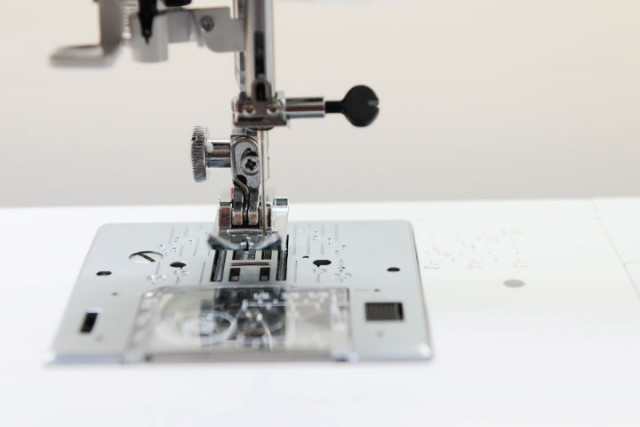
初階機種比較少見的七排送布齒，搭載在強調實用性能的5031S上，送布的緊密度與穩定性表現都相當不錯，要車縫較厚的帆布都不是問題。
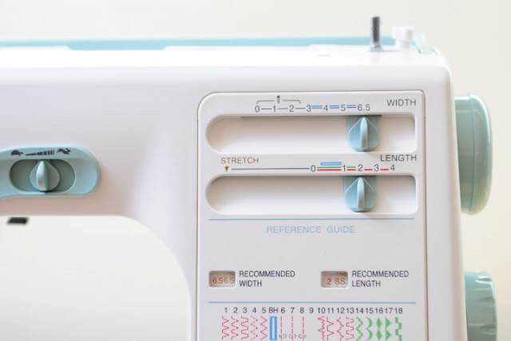
機械式的針距與針幅調整鈕，針幅調整亦可做為下針位置的左右微調，便於初學者控制車縫縫份寬度很有幫助。
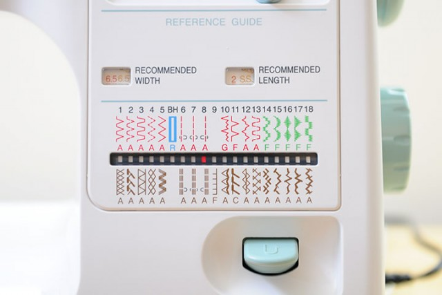
花樣選擇面板，受限於機械式切換的限制，只有32種花樣 + 自動開扣眼，不過Amy真心的覺得，這些花樣真的很夠用了，大部份我只會用到直線和鋸齒而已。而機械式的結構，相信在耐用度及後續維修上都會比較好。
另外值得一提的是它的開扣眼功能是一步驟就能完成的，相較於有些機型還是三步驟開扣眼，這功能也是蠻實用的喔。
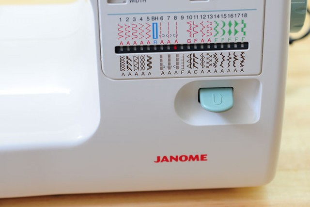
小巧的迴針壓板。
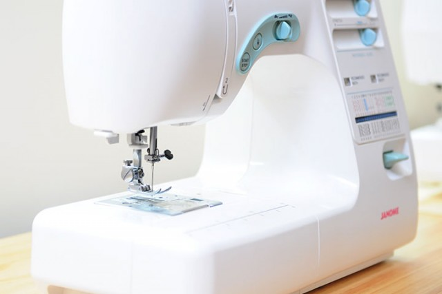 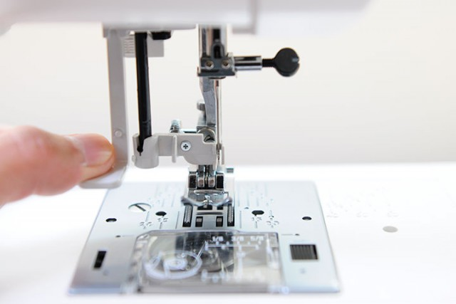
自動輔助穿線器
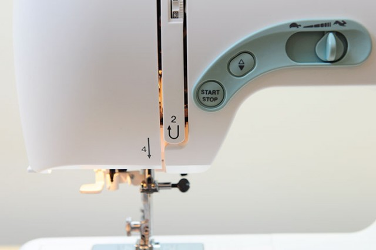
輔助燈算是我覺得比較不滿意的地方，只有一顆亮度實在不太夠，只能再加小抬燈補強燈光。
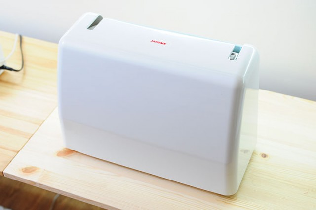 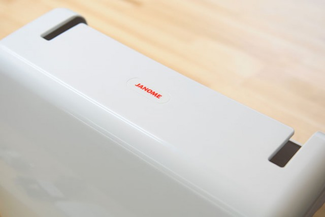
硬式防塵蓋
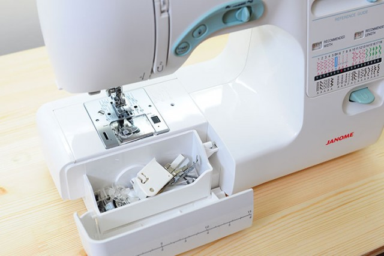
收納盒空間相當足夠，能把所有隨機附贈的配件都放入喔！不用擔心配件東一個西一個找不到。
這部 Janome 5031S 到工作室服役已經2個多月了，最大的印象就是它穩定的性能，車縫的聲音紮實，對初學者重要的速度調整和下針位置左右微調等功能，一樣都沒有少。
這部定位在性能導向的機型，受惠於它的配重設定，5031S 的重量有 7.6Kg，比起 DC6030 還重0.8Kg，車縫起來真的蠻穩的，加上七排送步齒的規格，遇到厚或多層布的車縫時，布壓的夠緊送的夠穩，因此對於性能稍具要求的進階使用者，也能應付需求，最棒的是 5031S 還有手控啟動、上下定針及手控速度等的功能，讓它可以是一部價位平實，C/P值高，兼具機械式的性能靈魂及初學者需求的縫紉機。
想購買或試車
現在跟Amy購買縫紉機，除了可享價格優惠外，還會再贈送Niizo折價券(可使用於手作課程或材料包)。
> 看各機型價格及贈品
暫不訂購！可填表單留email，將主動通知團購訊息
https://forms.gle/eJ5ErjTgP6EjFdWY8
我們每年會開兩次縫紉機團購，通常會在每年的三月及十月份左右，如果暫不急著訂購的話，可先填寫表單，留下正確的email，有開新的團購會主動通知您喔!

{kind=link}
{kind=link}
{kind=link}
{kind=link}
{kind=link}
{kind=link}
{kind=link}
{kind=link}
{kind=link}
{kind=link}
{kind=link}
{kind=link}
{kind=link}
{kind=link}
{kind=link}
{kind=link}
{kind=link}
{kind=link}
2018/05/11 at 3:47 下午
請問老師:很想知道這三台的傳動齒輪,是金屬製?或是塑膠製?謝謝!!
2018/06/01 at 11:00 上午
您好，詢問過代理商，1600的傳動齒輪是金屬的，5031S和6030則是部分金屬，希望對您有幫助～
2018/04/07 at 9:00 下午
所以這款算可以逢厚牛仔褲嗎?
2018/05/01 at 11:33 上午
牛仔褲沒問題喔，擔心的話，也可以來試車喔~
2018/03/26 at 8:01 下午
您好，請問5031S可以使用雙針車縫嗎？送布齒是否可以下降？謝謝
2018/03/28 at 9:00 上午
5031S不能使用雙針車縫喔，但送布齒可以下降是沒問題的，想要雙針車縫的話，可以考慮6030喔，有問題歡迎在問～